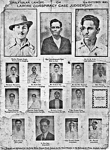

Bhagat Singh (1907-1931)
Introduction
Bhagat Singh (27 September 1907 – 23 March 1931) was a charismatic Indian revolutionary[3] who participated in the mistaken murder of a junior British police officer[4] in what was to be retaliation for the death of an Indian nationalist. He later took part in a largely symbolic bombing of the Central Legislative Assembly in Delhi and a hunger strike in jail, which—on the back of sympathetic coverage in Indian-owned newspapers—turned him into a household name in the Punjab region, and after his execution at age 23 into a martyr and folk hero in Northern India.[6] Borrowing ideas from Bolshevism and anarchism,[7] he electrified a growing militancy in India in the 1930s, and prompted urgent introspection within the Indian National Congress's nonviolent but eventually successful campaign for India's independence.
Early life
Bhagat Singh was born into a Punjabi Sikh family on 27 September 1907 in the village of Banga in the Lyallpur district of the Punjab in what was then British India and is today Pakistan; he was the second of seven children—four sons, and three daughters—born to Vidyavati and her husband Kishan Singh Sandhu. Bhagat Singh's father and his uncle Ajit Singh were active in progressive politics, taking part in the agitation around the Canal Colonization Bill in 1907, and later the Ghadar Movement of 1914–1915. After being sent to the village school in Banga for a few years, Bhagat Singh was enrolled in the Dayanand Anglo-Vedic School in Lahore. In 1923, he joined the National College in Lahore, founded two years earlier by Lala Lajpat Rai in response to Mahatma Gandhi's non-cooperation movement, which urged Indian students to shun schools and colleges subsidized by the British Indian government.
Revolutionary activities

Killing of John Saunders
In 1928, the British government set up the Simon Commission to report on the political situation in India. Some Indian political parties boycotted the Commission because there were no Indians in its membership,[b] and there were protests across the country.
When the Commission visited Lahore on 30 October 1928, Lala Lajpat Rai led a march in protest against it. Police attempts to disperse the large crowd resulted in violence. The superintendent of police, James A. Scott, ordered the police to lathi charge (use batons against)
the protesters and personally assaulted Rai, who was injured. Rai died of a heart attack on 17 November 1928. Doctors thought that his death might have been hastened by the injuries he had received. When the matter was raised in the Parliament of the United Kingdom,
the British Government denied any role in Rai's death.
Escape from Lahore
Bhagat Singh and Rajguru, both carrying loaded revolvers, left the house early the next day. Dressed in western attire (Bhagat Singh cut his hair, shaved his beard and wore a hat over cropped hair), and carrying Devi's sleeping child, Singh and Devi passed as a young couple, while Rajguru carried their luggage as their servant. At the station, Singh managed to conceal his identity while buying tickets, and the three boarded the train heading to Cawnpore (now Kanpur). There they boarded a train for Lucknow since the CID at Howrah railway station usually scrutinised passengers on the direct train from Lahore.[32] At Lucknow, Rajguru left separately
for Benares while Singh, Devi and the infant went to Howrah, with all except Singh returning to Lahore a few days later.
Delhi Assembly bombing and arrest
For some time, Bhagat Singh had been exploiting the power of drama as a means to inspire the revolt against the British, purchasing a magic lantern to show slides that
enlivened his talks about revolutionaries such as Ram Prasad Bismil who had died as a result of the Kakori conspiracy. In 1929, he proposed a dramatic act to the HSRA intended to gain massive publicity for their aims.
Influenced by Auguste Vaillant, a French anarchist who had bombed the Chamber of Deputies in Paris,
Singh's plan was to explode a bomb inside the Central Legislative Assembly.
The nominal intention was to protest against the Public Safety Bill, and the Trade Dispute Act, which had been rejected by the Assembly
but were being enacted by the Viceroy using his special powers; the actual intention was for the perpetrators to allow themselves to be arrested so that they could use court appearances as a stage to publicise their cause.
-
Singh, Bhagat (27 September 1931). Why I Am an Atheist.New Delhi: National Book Trust
-
Singh, Bhagat (28 January 2010).Ideas of a Nation: Singh, Bhagat . Penguin Books Limited.
-
Singh, Bhagat (15 August 2019). Letter to my Father . Sristhi Publishers & Distributors.
- Singh, Bhagat (2009). Selected works of Bhagat Singh. Big Red Oak.